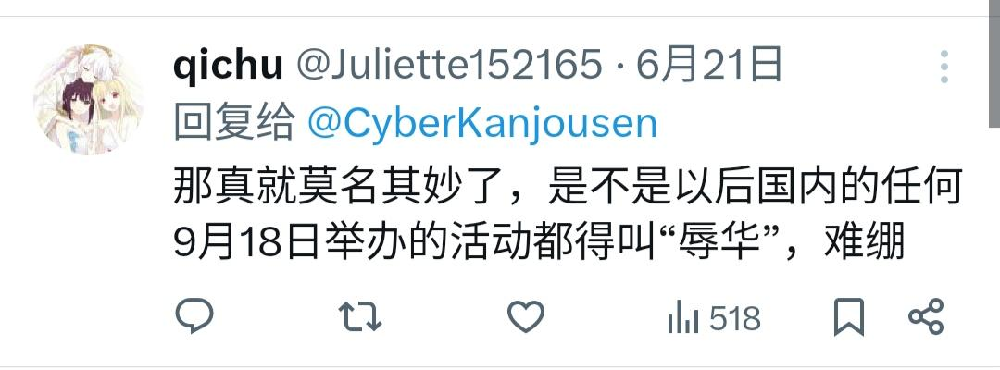

@ROCisChinaPart @hoshinofujivy 还是给您发野爹证吧，您不必再为反而反了，也不必再无限放大環状線那条推文的负面影响和危害，您爱怎么反就怎么反吧，爱怎么说環状線「炒作」就怎么说吧，反正您给環状線造成的损失已经够大了。就这样。
另外，環状線不对别人对環状線推文的回复负责，解释的权利和义务都不在于環状線，而在于回复者。

另外，環状線不对别人对環状線推文的回复负责，解释的权利和义务都不在于環状線，而在于回复者。

@CyberKanjousen @hoshinofujivy 有偏差肯定是正常的 但请你解释一下这两个例子他们为什么要发这些帖子 难道不是因为你的误导性且妖魔化的标题吗 你解释的挺好 但要看你那条帖子在事实上确实误导了许多人
我觉得这些吸引来的评论更印证了你炒作的嫌疑 https://t.co/cS4KNdkTSO
我觉得这些吸引来的评论更印证了你炒作的嫌疑 https://t.co/cS4KNdkTSO